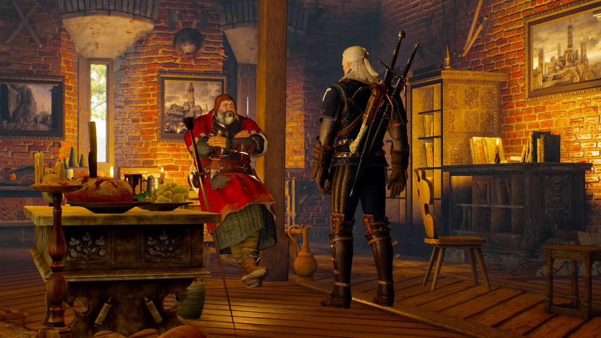

Witcher.help — Биография персонажей, прохождение квестов, игровые локации.
Трейлер Ведьмак 3: Дикая охота
Персонажи

Йеннифэр из Венгерберга
Одна из главных героев «Саги о Ведьмаке» Анджея Сапковского

Цирилла Фиона Элен Рианнон
Один из центральных персонажей литературной саги и второй протагонист игры Ведьмак 3: Дикая Охота

Геральт из Ривии
Главный герой литературной саги и протагонист последующих игр, ведьмак, профессиональный охотник на монстров, один из лучших фехтовальщиков Севера
Квесты

Подробнее
Дела семейные
Квест автоматически активируется по завершению задания «Кровавый Барон». Остановив свой рассказ на дальнейшей судьбе Цири, Барон говорит о своих пропавших накануне жене и дочке. Он просит их отыскать, а взамен Барон обещает продолжить свой рассказ.

Сейчас или никогда
Получив от Ингрид деньги, Трисс решает привести план в действие и эвакуировать чародеев в Ковир, и с этим ей должен был помочь Геральт.
Дела государственной важности
Дийкстра назначает встречу Геральту около порта Новиграда. Как только ведьмак войдет в помещение, то услышит, как Дийкстра, Роше и Талер разговаривают прямо над ним.
Всё ради золота
Переходя Понтар по одному из островов, Геральт находит на останках человека письмо и ключ. В письме говорилось о сокровищах на топях Велена. Горе-мародер решил отправиться на болота за ними, но встретил накеров и умер. Ведьмак решает найти эти сокровища, и действительно находит.

Королевский гамбит
После того, как Геральт помог детям Краха, он отправляется к ярлу за наградой. Прибыв в пиршественный зал Каэр Трольде, ведьмак встречает Хьялмара, который предлагает Геральту подраться с вильдкаарлами на кулаках, поставив свой меч на то, что Белый Волк проиграет.

Бестия из Белого Сада
Задание активируется во время разговора с командиром нильфгаардского гарнизона Петером Саар Гвинлеве. Узнав у него подробности о предстоящей добыче, перед Геральтом стоит выбор отправиться сразу к охотнику, первым заметивший убитых грифоном солдат или к травнице за крушиной.
Аудиенция
Задание начинается автоматически, сразу после диалога с Морвраном Воорхисом, суть которого состояла в раскрытии основных сюжетных выборов, сделанных Геральтом в игре Ведьмак 2: Убийцы Королей.